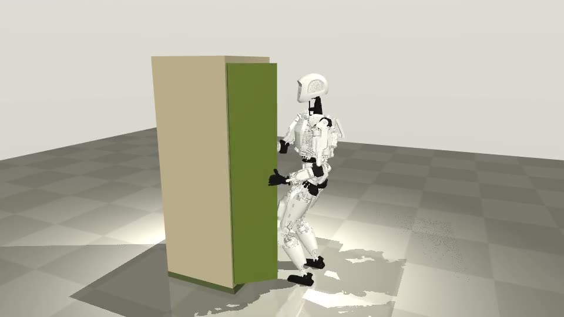

ObjectModel turns a capture of an articulated object into a measured, MuJoCo-validated digital twin. Twin-to-Task hands that twin to a humanoid, either the public Apollo model or a generic upper body. The humanoid opens the object in a simulation of its ground truth, so the simulator scores whether the twin is good enough to act on.
Independent student project · not affiliated with Apptronik · Apollo model: Google DeepMind MuJoCo Menagerie (Apache-2.0)

| Twin used to plan | Stiff arm | Extra force | Apollo | Extra path |
|---|---|---|---|---|
| ObjectModel twin | 100% | 0 N | 100% | 0 mm |
| +2° axis error | 0% | 19 N | 100% | 0 mm |
| +5° | 0% | 50 N | 100% | 3 mm |
| +10° | 0% | 79 N | 80% | 21 mm |
Doors, drawers and lids on 5 objects, each judged against the same task planned with the true joint (7 feasible on the stiff arm, 10 on Apollo). A stiff arm shows a bad twin as force; Apollo's compliant arm shows it as path error. The twins are within about 0.2° of the true axis at 1 mm tracking noise.
| Developer experience | CLI, MCP server for AI coding agents, hosted API, CI, a dev server that mirrors production |
| Real-time controls | Frames and quaternions, DLS IK with nullspace posture, servo tracking under load, a C++ core with sub-µs IK steps |
| Motion planning | Upper-body IK on the Apollo model, stance planning, constraint-force metrics |
| Simulation and sim-to-real | Simulator-in-the-loop validation, parameter estimation from motion, noise and camera-sway sweeps |
| Autonomy and perception | Perceive → model → plan → act → verify loop; LK tracking, depth lifting, ArUco scale. ROS 2 node is the next step. |
| Fleet and full-stack | Validated Python serverless API, a static web app with live 3D, deploy config |
Run it: objectmodel task kitchen_cabinet · objectmodel task-bench · objectmodel task fridge --robot apollo --video fridge.mp4 · Code: github.com/ayanbhardwaj1/objectmodel · Limits: contact-constraint grasp, pelvis held at stand, synthetic captures.